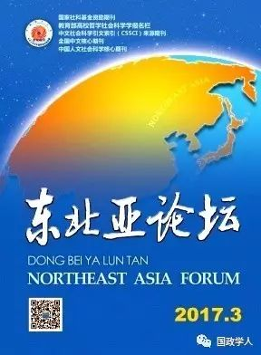

收录于合集

**
**
作者简介：
翟新，上海交通大学国际与公共事务学院教授，博士生导师；
刘城晨，上海交通大学国际与公共事务学院博士研究生。
本文来源：《东北亚论坛》2017年第3期

[ 摘要] 冷战后一直困扰东亚的安全与合作形势随该地域安全保障上的二元格局的凝固化而越发复杂，这在对“一带一路”建设造成阻碍和牵制的同时，也给予了中国借助“一带一路”的影响重构地域安全与合作机制的机遇。所以在目标、框架、功能、机构、原则上使东亚安全与合作机制改变成更切合时代潮流，并与“一带一路”相得益彰的新机制，应该说是消除域内安全与合作问题根源的最有效路径。
［关键词］ “一带一路”；东亚安全与合作机制；平衡战略；国际秩序构建；中国发展道路
将相关工作纳入为“一带一路”添力助能的轨道，已成当下中国各领域最重要的使命；而借助从“一带一路”获取的经济资源和公共产品、把已严重危及中国外部环境的东亚安全与合作机制加以重构，并将此工作在战略层面与“一带一路”进行交集整合，无疑也是有时代意义而值得迅急探讨的一项大课题。
今日东亚（含东北亚5国和东南亚10国）虽经济规模约已占到全亚洲近五十个国家及地区的八成或全球的三成，然在安全与合作上却依然处于矛盾错综和问题迭出的状态。冷战结束后，除东亚一些国家与美国之间建立了双边联盟体系外，还相继设置如东盟区域论坛、东盟+3、东盟防长扩大会议、亚太经合组织、东亚峰会、亚信峰会、六方会谈等安全与合作机制进行调解，然而这些机制因自身功能上的问题，结果大多失之“泛泛而谈，有针对性的少；道义呼吁的多，切实落实的少”。习近平主席2016年4月在亚信第五次外长会议开幕式上指出亚洲传统安全问题仍然存在，“区域安全合作亟待加强，需要循序渐进，探讨建立符合地区特点的安全架构”，即可理解为是针对这种现状的尖锐批评。因此，本文基于“一带一路”建设与东亚安全与合作机制重构互为支撑和相得益彰关系的理解，以实现其战略一体化的视角，在分析两者相促互动关系的基础上，就重构服务于“一带一路”的东亚安全与合作机制提出总体性构想。
一、 “一带一路”与重构东亚安全与合作机制的相互促动关系
**
**
这里所说“重构”的含义，并非指把现有东亚安全与合作体制全推倒重建，而是主张在维持既存机制的基础上，通过适当新设规则及机构，并使其在作用和功能上与原有机制实现整合。 这样重新构建的东亚安全与合作机制不仅能够更好地实现域内多数国家在安全与合作上的长远利益，也势必有助于“一带一路”建设。
第一，为“一带一路”建设排除战略上的后顾之忧。显然，东亚各国及地区间迄今虽有深度的经济协作关系，但却长期缺乏有效的安全与合作机制。进入新世纪以来，因中国崛起和美国相对衰弱而加速的“权力转移”问题，也给东亚各国带来了心理和认知上的不安全感，从而使得域内一些国家在经济上倚重中国的同时，却在安全上越来越依靠与美国建立同盟或高度协调的双边安保机制，进而形成经济与安全上的二元格局。这个状况不仅给地域安全带来不测要素，也对经贸形势产生深刻影响。所以从中短期看，美国在地域安全事务中的压倒性影响仍将存续，这就明显不利于中国实现“一带一路”的建设目标。因此从国家战略和国家安全的高度出发，首先就要考虑在推进“一带一路”时如何避免后院起火的事端，而这种安全风险如成常态，就极易为竞争对手制造可乘之机，从而使自己限于两头受夹击的被动境地。所以从东亚安全与合作机制的功能调整入手，就不失为有效解决这个问题的适当介入方式，使中国在对外战略布局上能做到东西均衡和相互依托。并且，在推进“一带一路”过程中，中国不仅会遭遇“以大国政治博弈、领土和岛屿争端以及区域内个别国家政局动荡为主的传统安全挑战”，也会受到“以恐怖主义、海盗以及跨国有组织犯罪为主的非传统安全”的威胁。因此，重构东亚安全与合作机制可使“一带一路”建设获得稳定的后援空间，并能把东亚安全与合作的成果不断转化为开拓西进事业的重要正能量。
第二，通过深化亚洲人主导解决东亚安全与合作问题的实践为“一带一路”建设增强国际支持的基础。如果我们坚持以集体安全为根本原则对东亚安全与合作机制重构，就必然要以培育东亚国家间的团结和相互信任为首义，通过倡导域内外国家在安全问题上的友好合作，追求能够达成国际和平宗旨的新型安全与合作机制。照此重新构建的机制因与中国和平崛起的国策完全一致，故而也有利于中国在重构该机制的过程中更好把握和平发展方向，形成国家坚实的国际信誉和软实力。这也正是2014年5月习近平主席在亚信第四次峰会上指出的“亚洲的事情，归根结底要靠亚洲人民办。亚洲的问题，归根结底要靠亚洲人民来处理。亚洲的安全，归根结底要靠亚洲人民来维护”这一指示的逻辑归结。就具体运作而言，中国可在重构东亚安全与合作机制之中充分凭借经济规模和长时期较稳定发展的优势，制约域内国际政治的走向，逐步限制和削弱美国等国及其掌握的安全机制在东亚安全事务处理中的主导性，从而实现东亚安全问题由域内国家协商解决的目标，最终为东亚安全共同体的形成创造条件。中国基于自身倡导的亚洲安全观之所以对重构东亚安全与合作机制赋予意义，在于它有以经济合作为基础、以共建、共享、共赢为目标地解决地域安全与合作问题的制度和原则，所以就与历史上美国奉行的门罗主义有着本质的不同。以米尔斯海默为代表的部分美国学者将中国倡导的地域安全机制建构视为军事范畴的反介入和区域拒止的行为，显然是不得要领的臆测；而它与日本在第二次大战战败前立足于本国军事霸权建立的“亚洲门罗主义”乃至“大东亚共荣圈”的地域安全机制也毫无共同之处。因此，重构东亚安全与合作机制所发生的新功能定会为“一带一路”建设带来拓展国际合作和支持基础的效果。
第三，重构东亚安全与合作机制的实践能为“一带一路”建设带来营造新国际秩序的合理经验。随着中国综合实力的增强，探索和创制合乎时代潮流的国际新秩序，是中国在对外活动中被广泛赋予的责任和使命，而选择从复杂的地域安全领域开始尝试对国际秩序作调整，它有助于展示自己坚定维护地域安全的国家意志，使域内外国家能够认识和理解中国追求和平发展的誓愿，从根本上消除“中国威胁论”的影响。其次，这样的选择也可看作是对国际上不时发生的所谓中国应为“维护国际安全与稳定”履行责任论的积极回应。就是说中国作为负责任的大国并非只是停留于口头，而应在国际安全保障领域履行使命和做出贡献。重构东亚安全与合作机制，可以先在有限范围内通过实践积累履行国际责任的经验，以此逐渐确立理性的新国际秩序创制主体的存在感，并借助“一带一路”建设的成就，在国际社会扩大对国际秩序改革成果的影响力。
不言而喻，“一带一路”建设也可为重构东亚安全与合作机制提供充分的经济基础和国际资源。2016年8月，习近平主席就“一带一路”建设的行动作出指示：“坚持各国共商、共建、共享，遵循平等、追求互利，牢牢把握重点方向，聚焦重点地区、重点国家、重点项目，抓住发展这个最大公约数，不仅造福中国人民，更造福沿线各国人民”。可见，“一带一路”建设可为重构东亚安全与合作机制置备现实和非凡的经贸及思想平台，有助于从根本上克服因域内存在经济与安全机制二元化引致的各种弊端，确保有关国家及地区能共享经济合作的成果，以降低渐趋高昂化的安全保障成本。“一带一路”建设的推动作用具体如下：
第一，“一带一路”建设利于启迪东亚各国民众的历史智慧，帮助其对安全与合作机制的重构做出理性选择。近代以来东亚多数国家不仅饱受列强的欺凌，还长期遭受地域安全与合作机制对立引致的损失。在这些充满深刻教训的历史过程中，中国可说是最为沉重地承受了东亚各个时期因存在结构性的对立而没有整体一元化的安全与合作机制带来的苦痛。因此，中国对于东亚地域的安全与合作也是最具有指认发展方向和谈论历史教训资格的国家。在这个前提下，我们现在通过推进旨在使域内国家实现共冨齐荣的“一带一路”建设，也会有效地帮助各国从历史的精神负债中超脱出来，并形成东亚安全共同体建设的自觉意识，为重构东亚安全与合作机制置备良好的精神基础。
第二，“一带一路”建设有利于克服现在东亚地域双边安全机制的弊端和缺陷。冷战结束至今，中朝以外的东亚国家大多坚持采用基于美国主导的双边同盟机制维护自身安全，而这种机制的本质只是在于消极防御，故它无力消除国家间不信任亦即安全问题产生的根源，相反却往往要当事国为此背负巨大的社会与经济成本，于是很容易使一些国家虽乐意搭乘便车，却不愿全力投入尽贡献，如韩国就十分担心被美国连累而拖入“不希望参与其中，或者它在其中没有明显利益的冲突”。尤其是当中美两国实力差距开始缩小时，这个机制的弊端和局限性就越发显露。所以“一带一路”的意义首先就在于，可以帮助东亚国家将参与经贸合作所获得的经济成果，用于解决维护地域安全的社会成本问题；其次，因为现有安全与合作机制的根本缺陷在于相关国家政治上互不信任成了安全利益对立的基轴，而“一带一路”则以追求共同利益为建设的根本理念和逻辑，所以推进过程自然会通过凝聚共识而不断扬弃现有安全机制中的“敌视性”和“争斗性”的缺陷，从而使现在“纷争高效”而“和解低效”的东亚安全与合作机制顺利实现重构。
第三，“一带一路”建设可为改善和维护东亚安全与合作机制不断提供国际公共产品。中国已经在这方面进入到相关经验的迅速积累和推广阶段。如20世纪末以来，解救亚洲金融危机和创设亚投行等举措，中国方面充分展示了全面整合地域经济的能力和成功提供急需国际公共产品的经验。所以，我们可以乐观展望涉及面更广的“一带一路”建设，能够使中国在“产生国际合作新理念和新模式、建设高效的基础设施、提供新的国际货币、建立新型国际金融组织”等方面，为包括东亚在内的国际社会贡献更多国际公共产品，这些也足可证明中国具备重构东亚安全与合作机制所需的能力。
第四，一带一路”建设包容性的方针和政策能使东亚主要国家所共有的集体安全政策观落到实处。至今为止，除了中国政府已于21世纪初正式表明维护地域集体安全的立场以外，东盟及韩日美等国领导人也都先后表示认同东亚共同体和地域安全合作等的构想。东盟+3机制和中日韩高层会谈机制的相继确立，则可看作是东亚域内国家在包括安全保障在内的诸多领域将合作予以制度化的建设性成果。不过，集体安全的思想与原则虽已得到东亚国家大多数领导人的首肯，但我们并未看到在地域安全与合作的实务和制度建设上取得相应进展。所以，以地域整体发展理念为根本指导思想的“一带一路”的社会实践，理应更容易覆盖和惠及包含东亚在内的国际社会，并为重铸东亚集体安全乃至一体化理论起到铺设道路的作用。
二、 重构东亚安全与合作机制的难点与问题
当然在风云急转的国际环境中，重构东亚安全与合作机制也面临着种种困难和现实问题，尚需要我们正确认识并创造条件去努力解决。
第一，历史上形成的域内各国因安全与合作机制上的问题引致的遗留问题和消极思维等的影响至今犹在。东亚安全仅在20世纪前80年间就经历了三次因相关国际机制的变异而导致的冲击。第一次是20年代美国为实现对东亚的支配和重建第一次世界大战后以本国为中心的亚太秩序，构建了华盛顿体系下的安全与合作机制，该机制以对中国门户开放为旗号，通过成立4国同盟和签订海军军备协定等，成功消解了日英同盟，有力限制并打击了日本这个当时美国扩张的主要对手，但因该机制以牺牲中国等国的利益为基础，且对他国明确显示了非对等性和排斥性，最终便带来使美日矛盾急剧升级和30年代后半期日本军国主义体制化的恶果。第二次是30、40年代日本为侵略邻国和称霸亚太而在“大东亚共荣圈”伞下炮制的东亚安全与合作机制，它虽以构建日本与东北亚及东南亚一些国家及地区“共存共荣的新秩序”为目标，还一度得到域内部分政治势力的支持，但因其鼓吹的安全与合作是以日本对他国确立绝对的军政支配为前提，亦即该机制是以压迫欺凌该地域弱小国家和民族，以及排斥英美等域外大国参与域内社会、经济活动为基本特性的，这就必然使其蜕变为打着超国家主义旗号而推行殖民主义统治的政治道具，故最终全面崩溃乃是必然。第三次是冷战期间美苏两大阵营基于全面对立的权力结构而分别设置的各类安全与合作机制，但由于在制度设计及运作方式上受到意识形态和体制差异而致的对他国的偏见及敌视观念的影响，使该机制不可避免带有对内部的紧张性和对外部的对立性这一基本特质，就如反映该机制运作时最常使用的如“封锁”、“包围”、“对峙”、“威胁”、“核威慑”等语词所示，其真实功能也就只在于加深美苏两大阵营间的政治紧张和误解对立，而并无增进和解和理解上的实际功效，最终使其堕为对安全与合作不具任何建设性的国际政治舞台的摆设。现今虽然上述状况和制度已不存在，但观念意识依然有一定影响，它制约着有关国家及其政治势力关于国际形势的判断和在安全事务处理上的政策决定方式。
第二，美国不断强化亚太联盟体系，不仅使东亚的紧张要素难以根除，同时也成了弱化安全与合作机制更新的动因。冷战结束以来，美国深知双边同盟的军事作用降低是势所必然，故试图“通过扩展任务范围、调整军力部署来寻求更好地适应新的战略环境和战略目标”对同盟关系予以调整。而随着中国崛起的势头越发明朗化，习惯于寻觅甚至建构对手的美国便采取“强化联盟承诺、提供军事支持等方式提高盟友对抗中国的能力”等对策，即把日本、韩国、澳大利亚、菲律宾等盟国定位为“美国向亚太转向的战略支点”，使本来应该以维护地域安全与合作为目标的这个美国主导的双边联盟体系，自21世纪以来却经常在扮演不断加剧地域紧张“元凶”的角色。可见，美国主导的这种双边安全机制因其在内外部的相关国家间利益调整中经常性催发安全形势中的失衡状态，以致各种矛盾交织频发，同时也使自己处于作茧自缚的境地，越来越难以妥善承担维护地域安全的主角重任。因此，在这种背景下推进重构东亚安全与合作机制，极易被美方视为取代其主导地位的地域安全体系重新组合行为而加以敌视，并被竭力设置障碍和惹事搅局，美方甚至可能以多重手段向外界发送错误信号，削弱重构东亚安全与合作机制的合理性和正当性。
第三，域内外一些国家为追求利益最大化而不顾地域安全大局，甚至不惜两面出牌和下注，遂在一定程度上助长安全与经济机制二元格局的固化。如上所述，现今要解决东亚安全中的任何问题都无法忽视域内多数国家几乎都以不同方式融入美国主导的双边安全体系中的现实，而要在这种体系下维护国家及地域安全，必须花费高昂的成本和资源，更为严重的是它因无法根除国家间互不信任这一最大的安全问题根源，所以已广为诟病。伴随东亚权力格局的转变，美国的盟友国“也不得不思考联盟的价值，从而加剧对联盟发展前景的担忧”。而另一方面，因美国主导的双边安全体系的存在，当中国对地域经济整合的能力有所抬升，就会被一些国家视为威胁力量，结果经常出现本来仅为经贸和金融领域的竞争，却被无端放大为与安全关联的问题，如在参加亚投行一事上美日等国表现出的疑虑，以及日本在美国支持下拟出台的五年间以1000亿美元用于亚洲基础设施投资的对抗性计划，即可谓突出事例。另如作为“一带一路”建设重要环节的中国高铁“走出去”战略在泰国、新加坡、马来西亚等国推行时就遇到日本的不断阻挠，这除了正常的商业利益驱使以外，基于地缘政治观的安全问题考量也可谓主因之一，经济形势就这样因政治要素被与安全秩序捆绑在一起。因此，在这种地域形势和国际安全观之下，中国出面推进东亚安全与合作机制的改革，首先会遇到来自多方面的不理解甚至疑惑；一旦发生利害冲突和矛盾，往往难以简单转圜，其结果轻者使重构受挫，重者甚至反会引发国家间纷争和冲突。
第四，如果中国主导与相关国一起担负起重构东亚安全与合作机制的责任，也就等于同时把自己置身问题的旋涡，由此必然会面临空前未有的自我优化的挑战。东亚主要国家在安全上依赖美国的现状，是在冷战的历史条件下形成的，但这也与中国长期在地域安全问题上没有明确表示集体安全的立场和姿态有关。但随着中美权力转移给东亚安全形势带来的不确定性越发加重，只要中方能在地域安全事务上承担起提供更多优质的制度、机制等公共产品的国际责任，那么东亚各国所倚重的安全保障主体从美国逐渐转向中国，则具有必然性。因此，重构东亚安全与合作机制的过程既是中国扩大国际影响力的积极方式，也应是获取域内主要国家信任和拥护的有效路径。当下东亚安全与合作的关键问题，在于因美国的财力见绌和孤立主义倾向加深而使维护区域安全所需公共产品出现供给不足，而随着美国提供公共产品的意愿与能力逐渐低下，即“美国将东亚安全公共产品日益‘私物化’”，通过“强化安全公共产品排外性，提高使用公共产品成本”，就会给中国提供不可多得的机会。换句话说，在应对岛屿与海洋争端、金融危机、气候变化、环境污染、传染病防治等传统与非传统安全问题上持续提供大量优质、有效的区域公共产品和公共服务，需要强有力的财经力量予以支撑，这对于尚未走出金融危机阴影的美国来说，确实并非易事。与此相对，在“维护海外利益的需要、国际社会对中国贡献预期”等一系列现实因素的影响下，中国在国际公共产品供给上的意愿与能力会有明显提升。当然，要把可能变成现实，需要我们持续踏实的努力和不断探索国际安全事务处理的经验聚积，以及全面克服我们在相关领域因知识和实践的不足造成的短板，因为重构东亚安全与合作机制也与任何国际秩序再造一样，它们都只能成就于参与主体丰富的智慧和经验之上。
三、 重构东亚安全与合作机制的构想
基于服务于“一带一路”建设的战略目标，以下就重构东亚安全与合作机制提几点总体构想：
第一，关于重构东亚安全与合作机制的目标。重构该机制所追求的根本宗旨则在于维护地域和平和增进东亚国家间的政治信任，为此必须消除现在东亚主要国家均依赖于将美国置于核心地位的双边安全保障体系所产生的弊端，减少域内外当事国间的对立性和排斥性，增进包容性和共同命运感，最终实现主要由东亚国家及民族确保东亚安全的目标，也使东亚成为“一带一路”建设的重点合作地域。因此，重构东亚安全与合作机制也应以逐渐在东亚确立集体安全保障制度，并阶段性地取代现在以美国为中心的双边安全机制模式，最终形成以东亚安全共同体为根本目的的地域安全与合作机制。在这之前，则以兼容并包的方针允许既有机制的持续存在，使其作为域内安全与合作的过渡性机制发挥作用。
所以要在实现最终目标前安排过渡性制度的考量，这是因为冷战结束后以东盟地区论坛为代表的东亚安全领域的合作呈现多边主义的发展势头虽被人们视为竞争性双边联盟体系的替代品而得到赞许，但事实上由于战后东亚长期在权力与责任、制度有效性需求、集体认同等方面有着很大差异，使得建立统一的安全与合作机制实际上存在超出人们想象的难度。因此在可以预见的长时期内，为确保中美及中日权力转移期东亚的稳定与和平，实有必要吸取历史上苏联曾排斥美国参加欧洲安全与合作机制（欧安会）而带来诸多问题的教训，即在有关重构东亚安全与合作机制的特性和地位规定上，要尽量避免采取与域内原有的安全与合作机制采取对立或相互排斥的定性和制度安排。
第二，关于重构东亚安全与合作机制的结构。首先，重构的东亚安全与合作机制将在一定时期内与域内既有的同盟型、协调型、网状型的双边或多边形的安全机制处于协调和相互制约的关系。因此，在更为新型和体系化的机制成为地域安全保障的核心制度之前，既要维护新设的东亚安全与合作机制与原有诸机制的并存和竞争，又要确保前者对后者具有不断渗透和限制的力量，这样做实际上是追求通过“多种安全模式之间的合作，为东亚国家提供更多的安全选择，是一种相互兼容的过程”。其次，通过整合六方会谈、东盟区域论坛等次地域安全与合作机制，使它们成为该机制网络中应对各自具体问题的分支系统，这也是因为尽管这些次地域机制存在诸多问题和局限性，但是在“稳定周边、推进东亚合作和一体化、扩展中国在该地区的影响力、抵制美国的影响力”等方面仍可发挥重要作用。这就要求重构的东亚安全与合作机制具有对其他持基本相同宗旨的机制进行有效制约的工作机理，同时尚须维持和保留这些次地域机制在解决具体问题过程中的原有功能。再次，在鼓励东亚中小国家加强相互协调的同时，也要明确域内外相关大国的责任所在，如可将已有的中美战略经济对话、中日韩领导人峰会等机制整合入重构后的东亚安全与合作机制的框架之内，使之成为第一轨道外交的核心。其四，发挥域内各国及地区的思想库及非政府组织等的积极作用，将各国城市间的安全与合作机制及领导人定期会晤的第二轨道外交、第三轨道外交均作为重构后的东亚安全与合作机制的结构性补充或延长。另如在“一带一路”建设的背景下，可“将城市直接对接联合国、世界银行等国际组织的活动；城市多边合作机制直接对接国家层面的全球性、区域和次区域机制”，然后将其均延伸为东亚安全与合作机制的补充。
第三，关于重构东亚安全与合作机制的功能领域。根据解决东亚安全与合作事务处理的实际需要，重构该机制时宜将其功能领域区分为海洋安全、陆地安全、空域安全、非传统安全等，这些领域分别涵盖面向东亚安全与合作机制的成员国（地区）和有关国及地区的互信机制、协议领土领海领空纷争事项机制、海洋和陆地监管机制、海陆空相互援助机制、危机管理机制、冲突排除机制、战争预警机制等次核心安全与合作机制。这样就要求东亚安全与合作机制应该常设一批机构日常负责处理相应的具体事务，同时协调和处理各国及地区突然及常态下发生的安全问题。更重要的是，重构的东亚安全与合作机制在东亚各国及地区必须预设使各类安全机制能够与经济协作机制互动和对接的功能，关于这一点，主要是针对1997年东南亚金融危机后在东亚域内逐渐形成的“跨太平洋伙伴关系协议”、“区域全面经济伙伴关系”、“亚太自贸区”以及“中日韩三国自由贸易协定”等经济合作机制，既存在经济上的“东亚轨道和亚太轨道间的博弈”问题，还有着与安全机制脱节的弊端。因此，如将经济协作机制与安全机制彼此分割的问题置于“一带一路”中尝试解决，将由于这种新型经贸合作活动一是较容易促进彼此的理解，从而缓解中国“威胁论”；二是也会有利于各国将自经贸领域的获利支付安全保障所需的成本；三是甚至在安全保障上也逐渐增大对华依赖，遂使这两种机制间的对接尤其是良性互动变得更为容易。
第四，关于重构东亚安全与合作机制的原则。为使重构的东亚安全与合作机制能有效发挥预设的作用，同时及时、充分地供给国际公共产品，该机制的运作过程要始终贯彻包括性、开放性、公平性的原则；并在该机制内设置具有独立性的事务机构，机制内部要制定关于成员国之间进行相互监督、实行信息与知识共享、确保畅通对等对话等方面的规则。既然东亚安全与合作机制以推进域内外国家间的相互信任和理解作为事业起点和根本目的，故重构过程要始终贯彻有效性原则，也要以政策鼓励域内当事国作为利益攸关方积极参与安全事务的协议原则，还要为避免出现基于单纯空论的非良性博弈而设置各种限制性规则。
第五，关于重构东亚安全与合作机制的新设权威性平台。以上诸点都是关于调整安全与合作机制内在的性质和功能的设想，而最后这点是有关机制的核心载体即机构的设置。所不同的是，前者基本是通过对既有机制的调整来实现的，而后者则完全是新设的制度和机构。主要内容是将采取渐进的方式，分两步完成主要新平台的设置。第一步是设立以东亚各国为成员的“东亚安全与合作会议”，发表东亚安全与合作宪章，建立有关内部机构和所需制度，积累起运作经验与工作实绩；第二步则以东安会为基础设立“东亚安全与合作组织”，最终将该组织建设成在所有东亚安全与合作机制中具有核心的统摄作用，亦即处理东亚安全与合作事务最具权威性的机构。
获取方式：
公众号后台（聊天页面）发送“ 东北亚论坛 ”自动获取
筛选：晞哲
编辑：维君
声 明
本文由国政学人首发编辑，分享目的是方便广大学人进行学术研究，促进学术的传播和交流，不做任何商业用途。如有任何权利问题，请直接与我们联系。